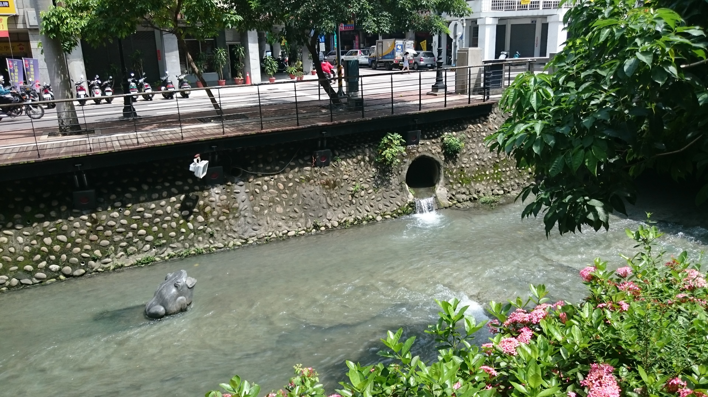
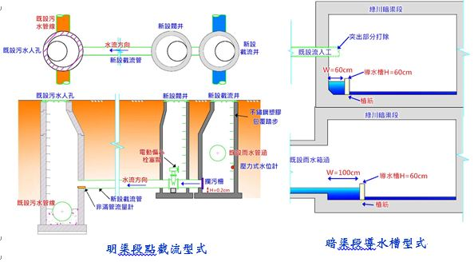

綠川晴天污水截流工程
目前我們的綠川裡的流水，大部分都是民生污水， 要如何減少污水流入綠川？
綠川晴天污水截流工程將於民權路以北至精武路之綠川流域沿岸，針對雨污混流之排水箱涵及排水溝渠進行晴天 污水截流，各幹線截流處則透過引流管將截流污水導入周圍鄰近污水系統並納入福田水資源回收中心，目前已完成規劃設計進入發包階段，預計於105年底完工，本工程將進行旱溪引水導水槽、精武路停車場截流、暗渠段截流導水槽及明渠斷點截流工程，每日可截流約24,000噸晴天污水，預期未來綠川的水質可獲得良好的改善。
 本工程為因應綠川明渠及暗渠兩種流入工性質，以不影響河川通洪量的方式將污水妥善收集，共設置18處點截流及導水槽約1.3公里。 明渠段採點截流型式，預定設置截流井採跌落方式收集晴天污水，另設閥井採控制栓塞閥配合開度計及壓力式水位計操控，末端以截流管導入既設污水系統納入福田水資中心處理。 暗渠端採導水槽流型式，為全面截流暗渠段晴天污水，預計於箱涵底部設置導水槽，於導水槽出流端設置控制閥井，末端以截流管導入既設污水系統納入福田水資中心處理。